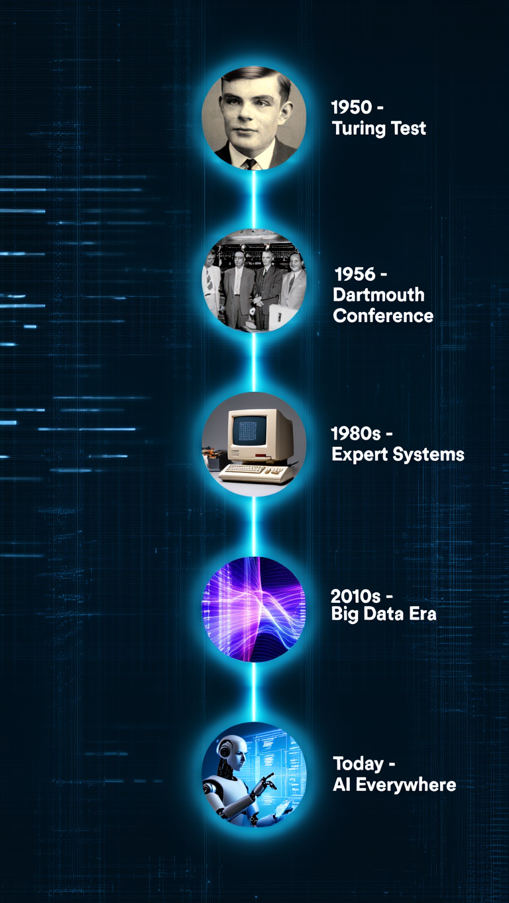

What Is Artificial Intelligence?
Artificial Intelligence is a field of computer science focused on creating systems that can learn, think, and make decisions similarly to humans. Instead of following strict instructions, AI can analyze data, recognize patterns, solve problems, and improve its performance over time.
AI combines several disciplines:
- Computer Science
- Mathematics
- Statistics
- Neuroscience
- Linguistics
Together, these fields help create systems capable of intelligent behavior.
History and Evolution of AI

The idea of intelligent machines dates back to ancient myths and early mechanical inventions. However, AI as a scientific field began in the 1950s.
Key milestones in AI history include:
- 1950 – Alan Turing proposes the “Turing Test” to measure machine intelligence.
- 1956 – The term “Artificial Intelligence” is introduced at the Dartmouth Conference.
- 1980s – AI becomes widely used in expert systems for business and medicine.
- 2010s – Big data and powerful computers accelerate AI progress dramatically.
- Today – AI is integrated into nearly every industry, from healthcare to finance.
- Data
- Algorithms
- Training
- Feedback
How AI Works
AI works by learning from data and using algorithms to make decisions or predictions.
Key components include:
AI systems need large amounts of information to learn.
Examples: images, text, numbers, videos, audio.
These are sets of rules or instructions that allow the AI to find patterns or make decisions.
AI systems improve by being trained on examples — similar to how humans learn through experience.
AI evaluates results and adjusts itself to perform better over time.
Conclusion
Artificial Intelligence is transforming the world in unprecedented ways. It enhances efficiency, improves decision-making, and enables new capabilities in nearly every sector. While AI presents challenges such as privacy, ethics, and job concerns, its potential benefits are enormous. As AI continues to evolve, understanding how it works and how it affects society is essential for using it responsibly and effectively.
As we stand at the forefront of technological advancement, it is crucial to foster collaboration between developers, policymakers, and society to ensure that AI benefits everyone and aligns with our shared values and goals for a better future.